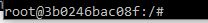

How to Set Up a Web Server with Docker
This page will function as a basic tutorial for setting up a web server using Docker. The main source for this guide and for more information, click this link.
STEP 1: Setting Up Ubuntu
First you need to download Ubuntu on to Docker, just run the following code:
>docker pull ubuntu
STEP 2: Setting Up Vim
Now you should need vim, try with to start an image of ubuntu using the following command
>docker run -it ubuntu:latest /bin/bash
After this you will now be using ubuntu, now download Vim with this command
>apt-get install vim
STEP 3: Setting Up Apache
Now you need to install Apache which is what the webserver will use, enter the following command
>apt-get install apache2
After installing Apache2, take note of the snapshot number, it is next to the root, it should look similar to this
 Exit by typing exit
STEP 4: Setting Up Docker Image
Now to create a docker image, use the following command
>docker commit 3b0246bc08f ubuntu-my_apache2
The string of random values is just an example and your value will be unique.
STEP 5: Run Image
Using this command the server will now exist
>docker run -it -p 127.0.0.1:80:80 -v H:\host\local_dir:/index.html ubuntu-my_apache2 /bin/bash
Now the web server should be up